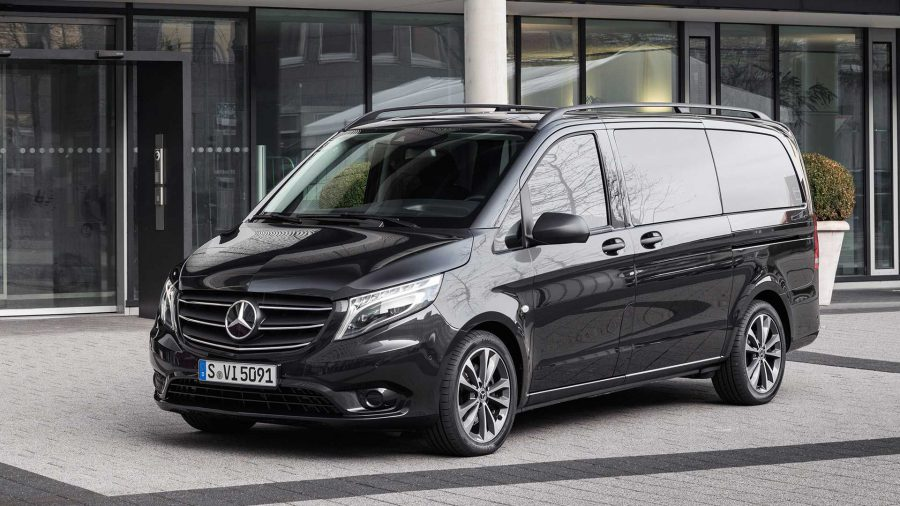

Özellikler
Seri Vito
Model 114 BlueTec
Yıl 2022
Yakıt Dizel
Vites Otomatik
Km 0
Kasa Tipi Minibüs
Şasi Uzun
Motor Gücü 126 - 150 hp
Motor Hacmi 1801 - 2000 cm3
Çekiş 4x2 (Arkadan İtişli)
Koltuk Sayısı 9+1
Renk Siyah
Ruhsat Kaydı Minibüs
ABS - ASR - ESP
MAYBACH Bİ-XENON FAR
MAYBACH LED - STOP
SÜRÜCÜ - YOLCU - YAN HAVA YASTIĞI
HIZ SABİTLEME - LİMİTLEME
FAR - YAĞMUR PARK SENSÖRÜ
ÇARPIŞMA ÖNLEYİCİ
ELEKTRİKLİ HOSTES KOLTUK
ELEKTRİKLİ 3'LÜ YATARLI - BALDIR DESTEKLİ KOLTUK
GERİ GÖRÜŞ
START & STOP
GÜNDÜZ LED
OTOMATİK UZUN FAR
ÇİFT KABLOSUZ ŞARZ
ORJİNAL MAUN SET
MAYBACH TAVAN
SU GEÇİRMEZ 1. SINIF TABAN
JALUZİ PERDE
İÇECEK ÜNİTESİ
YOLCU ÖN GÖRÜŞ KAMERASI
ÇOK FONKSİYON MASAJLI KOLTUKLAR
ORJİNAL OTOMATİK KAPI
15 RENK LED AMBİYANS
SOSYAL MEDYA / İNTERNET / TV
ARAÇ İÇİ TELEFON
NAVİGASYON
ÇELİK PARA KASASI
ELEKTRİKLİ ÇİFT MASA
DERİN DONDURUCU / BUZDOLABI
ELEKTRİKLİ / ASANSÖRLÜ ARA BÖLME
GENİŞ EKRAN 82'' LG TV
DOKUNMATİK EKRAN 8'' DOUBLE TEYP
MERCEDES MAYBACH BADY KİT
MAYBACH 19'' OFSETLİ SIFIR JANT / LASTİK
MERCEDES S-CLASS 1.SINIF İHTAL KOLTUKLAR
EKSTRA FULL İZALASYONLU
MAYBACH ÖN PANJUR
MAYBACH KAPUT ARMASI
MAYBACH YAN ÇAMURLUK LOGOLARI
MAYBACH ARKA ARMASI
KROM SET
3M LOGOLU CAM FİLM
220 / 12V ÇIKIŞ
USB / PRİZ / AUX
BUSMASTER
MÜZİK SİSTEMİ
